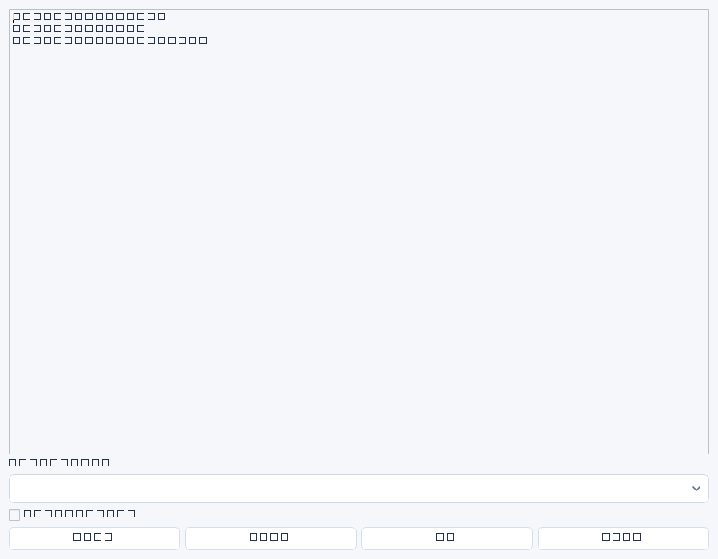

- 进入“汇报与草稿” → “生成范围报告”，选择起止日期、负责人和模块；也可“新建邮件 / 任务下达草稿”。
- 阅读来源ID、统计范围和遗漏项，补充需要决策及下期计划。报告是可编辑草稿，不自动成为已发邮件或正式任务。
- “编辑 / 批准 / 发送”中先保存，再人工“审核批准”当前正文。
- 选定启用渠道并核对实际群或邮件收件人；邮件可选择附带报告文件。点击发送前再次确认。
- 到“发送记录”查看结果；网络错误时先核对第三方，不直接连续点击重发。
统计口径
报告统计周期内更新的记录及截至结束日期的当前未结逾期项，更新时间按UTC日期；不是某天的历史数据库快照。负责人筛选为字段匹配，不是组织权限隔离。人员、考核、权限明细默认排除；手工写入正文的敏感信息仍需自行审查。
版本和输出
正文修改后必须重新审核批准，批准版本与发送版本关联；发送记录保存修订号与内容哈希。导出正文可选UTF-8 Markdown或文本，导出本身不代表批准或发送。邮件附件由服务生成，不支持让客户端指定任意服务器文件。
状态解释
| 状态 | 操作 |
|---|---|
| pending / sending | 已占位或发送中，不重复点击。 |
| sent | 接口返回成功；不等于人已阅读，SMTP不保证最终投递。 |
| uncertain | 可能已被接收；先核对群消息/邮箱/管理员日志，再决定是否重新发送。 |
| failed | 周期执行失败，检查配置和数据；没有承诺自动重试。 |
| draft_created | 周期草稿已生成，尚未发送。 |
| duplicate | 相同幂等请求已拦截，不代表另一条新请求也会被拦截。 |
实际网络发送异常保守记为uncertain，不支持跨平台“恰好一次”保证；新请求ID可产生第二次发送。重新打开窗口也不能代替核对历史。


